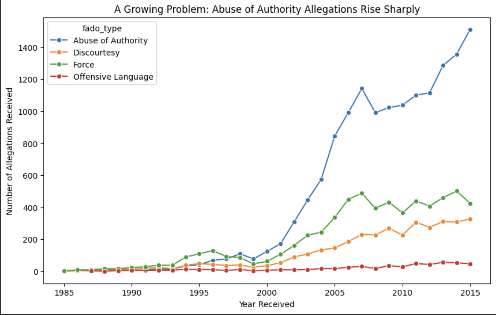
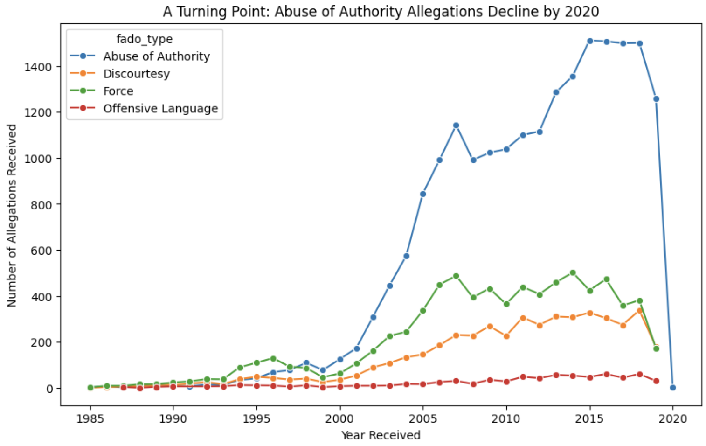

Proposition: Abuse of authority has been getting worse over the years
FOR the Proposition

Design Decisions and Rationale:
- Ending the chart at the 2015 peak (-1.5). I stopped the x-axis at 2015, the highest point, so everything after it is hidden and to maximize increase. The chart reads as a steady climb, which supports the proposition. I considered showing all years and dropped it because the later years flatten the story.
- Treating allegations as evidence it’s getting worse (-1.5). The chart counts every allegation received, whatever the outcome, so the rise could reflect more people filing complaints or changes in how the board works, not more misconduct. The axis is honestly labeled “Number of Allegations Received,” but the title and proposition imply more abuse. I chose all allegations because the line is much higher (1,511) than substantiated findings alone (629).
- A loaded title (-1). “A Growing Problem: Abuse of Authority Allegations Rise Sharply” tells the reader how to interpret the line before they look at it, and “problem” and “sharply” are persuasive words.
- Not mentioning the dataset’s limits (-1.5). The data only includes closed cases for officers still on the force in June 2020, so officers who left are missing and the early years look artificially low. That makes the rise look steeper. A footnote would have been the earnest choice.
AGAINST the Proposition

Design Decisions and Rationale:
- Showing the full range of years in the data (1.5). Showing every year, not a selected window, makes both the 2015 peak and the decline after it visible. This is the most honest baseline. The downside is that the chart also shows the earlier rise, so the title has to direct attention to the decline.
- Leaving in the partial 2020 data point (-2). The line plunges to 4 complaints received in 2020, which makes the decline look dramatic. It’s actually an artifact, because the dataset ends in January 2020 and that year has only a few weeks of closed cases. I left it in because it creates the strongest visual of a “turning point.”
- Not mentioning that recent cases may be missing (-1.5). The dataset only includes closed cases, so allegations received in 2018 and 2019 that were still open in January 2020 are not counted, which could partly explain the drop. Concluding that abuse of authority is “getting better” also stretches the data, since allegations aren’t a direct measure of officer behavior.
Final Reflection
Both figures come from the same ProPublica dataset of more than 12,000 civilian complaints against NYPD officers, and both plot the same four lines. Yet Figure 1 tells a story of escalation and Figure 2 tells one of reversal. Nothing in either chart is fabricated. The persuasion comes from the choices around the data: where I ended the x-axis, which allegations I counted, how I titled each figure, and what I left unsaid.
In Figure 1, three choices were deceptive. I ended the axis at the 2015 peak so the line reads as a steady climb. I counted all allegations received (1,511 in 2015) instead of substantiated ones (629), even though the larger number better fit my argument and says less about actual misconduct. And I used a loaded title or keywords like, “A Growing Problem” and “Rise Sharply,” which tells the reader what to conclude before they look at the data. In Figure 2, I treated showing the full range of years as the earnest choice, because it shows both the peak and what follows. But I paired it with a deceptive one: leaving in the partial 2020 point. The line drops to 4 allegations, a “turning point” that is really an artifact of the dataset ending in January 2020. In both figures I made the same omission. The dataset includes only closed cases against officers still on the force in June 2020, so the earliest years are undercounted (officers who left are missing) and the latest years are undercounted (recent cases were still open). The rise in Figure 1 looks steeper and the drop in Figure 2 looks sharper because of how the data was collected, and neither chart tells the reader this.
What stands out to me is that the deception rarely lives in the data itself. It lives in the gap between what a chart literally shows (allegations received) and what its title implies (abuse occurring). My axis label in Figure 1 was accurate, but most readers take in a title and the shape of a line within seconds and never read the label, the caption, or a footnote. A designer who relies on fine print to stay technically honest is still shaping what most people walk away believing. Allegations are also a weak proxy for officer behavior. They can rise because filing a complaint becomes easier, because the public trusts the board more, or because cases are processed differently. In 2015, fewer than half of abuse-of-authority allegations (629 of 1,511) were substantiated, so a reader who sees only the larger number could easily overestimate how much misconduct occurred. The opposite error applies to Figure 2: a reader who sees a drop to near zero could conclude that policing has improved, when the data can’t support that.
These stakes are real. A resident might lose trust in all officers based on Figure 1, or a policymaker might cut oversight based on Figure 2. Officers, complainants, and the public are all affected by how this data is framed, and an earnest designer owes them more care than a persuasive one. If I were designing this chart honestly, I would show the full range of years, mark or remove the incomplete 2019 and 2020 data, footnote that only closed cases for current officers are included, show substantiated and total allegations side by side, and use a neutral title that describes what is plotted rather than what I want the reader to conclude. Doing this assignment changed how I think about persuasive visualization. I am always choosing a framing, so the real question is whether I give the reader enough context to notice that choice and disagree with it.